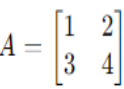
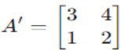
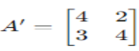
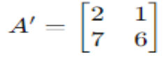

Matriks adalah alat penting dalam matematika yang digunakan untuk merepresentasikan dan memanipulasi data.
Matriks khusus adalah matriks dengan sifat-sifat tertentu yang membuatnya memiliki peranan penting dalam berbagai aplikasi matematika dan ilmu terkait.
Matriks identitas 𝐼adalah matriks persegi 𝑛×𝑛 yang memiliki unsur 1 di diagonal utama dan unsur 0 di luar diagonal.
Notasi: 𝐼𝑛 atau hanya 𝐼 jika ukurannya jelas dari konteks.
Contoh:
Matriks nol adalah matriks di mana semua unsur adalah 0.
Notasi: 𝑂
Contoh :
Matriks rotasi adalah matriks khusus yang digunakan untuk memutar objek dalam ruang.
Contoh:
Matriks diagonal adalah matriks di mana semua elemen di luar diagonal utamanya bernilai 0.
Contoh :
Matriks simetris adalah matriks persegi di mana elemen-elemen di kedua sisi diagonal utama berpasangan sama.
Contoh:
Transformasi elementer adalah operasi dasar yang dilakukan pada baris atau kolom matriks untuk mengubahnya menjadi bentuk tertentu atau untuk mencari solusi sistem persamaan linear.
Ada tiga jenis transformasi elementer utama:
Pertukaran Baris/Kolom: Mengganti posisi dua baris atau dua kolom dalam matriks.
Perkalian Baris/Kolom dengan Skalar: Mengalikan semua elemen dalam satu baris atau satu kolom dengan suatu skalar yang tidak nol.
Penambahan Baris/Kolom: Menambahkan suatu kelipatan dari satu baris atau satu kolom ke baris atau kolom lainnya.
Misalnya, untuk matriks 𝐴 :
Pertukaran Baris/Kolom: Misalnya, pertukaran baris pertama dan baris kedua:
Perkalian Baris/Kolom dengan Skalar: Misalnya, mengalikan baris pertama dengan 2:
Penambahan Baris/Kolom: Misalnya, menambahkan dua kali baris pertama ke baris kedua:
Grafika Komputer:
Dalam grafika komputer, transformasi matriks digunakan untuk mengubah posisi, rotasi, dan skala objek dalam sebuah scene.
Matriks rotasi digunakan untuk memutar objek seperti model 3D.
Matriks transposisi digunakan untuk mengubah koordinat objek ke sistem koordinat yang berbeda.
Pengolahan Citra:
Dalam pengolahan citra, transformasi matriks digunakan untuk menerapkan efek seperti rotasi, flipping (pemutaran), dan scaling (penykalan) pada gambar.
Matriks konvolusi digunakan untuk menerapkan filter pada gambar seperti filter blur, sharpen, dan edge detection.
Kriptografi:
Matriks transformasi digunakan dalam algoritma kriptografi untuk mengenkripsi dan mendekripsi data.
Algoritma enkripsi seperti algoritma Hill Cipher menggunakan matriks sebagai kunci enkripsi.
Pengolahan Sinyal Digital:
Transformasi Fourier menggunakan matriks khusus untuk mengubah sinyal waktu menjadi domain frekuensi.
Matriks transformasi Walsh-Hadamard digunakan dalam kompresi data dan pemrosesan sinyal.
Pemrosesan Paralel:
Dalam pemrosesan paralel, matriks khusus seperti matriks identitas dan matriks nol digunakan dalam operasi matriks pada prosesor grafis (GPU) dan dalam jaringan syaraf tiruan (neural networks).
Analisis Data:
Dalam analisis data, matriks transformasi digunakan dalam teknik reduksi dimensi seperti Principal Component Analysis (PCA) untuk mengurangi kompleksitas data.
Sistem Informasi Geografis (GIS):
Dalam GIS, matriks transformasi digunakan untuk melakukan transformasi koordinat antara sistem koordinat geografis yang berbeda.
Algoritma Machine Learning:
Dalam machine learning, matriks transformasi digunakan untuk memproses dan mengelola data dalam matriks fitur.
Algoritma seperti Singular Value Decomposition (SVD) dan Principal Component Analysis (PCA) menggunakan matriks transformasi untuk mengurangi dimensi dan menganalisis data.